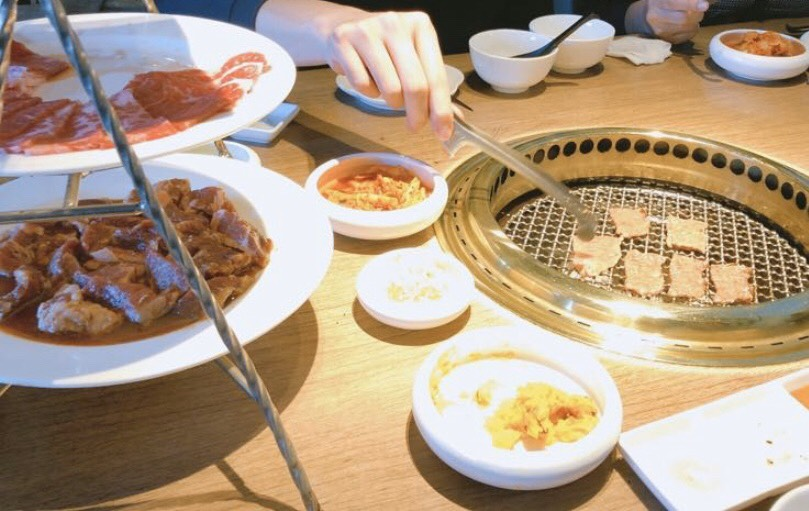

Food Map
Making this because I took plenty of food photos and I'm hungry now.
◆1◆ 私嚐の吃飯
地點＿新竹市東區中正路96巷16號
呷啥＿咖哩飯 烏龍麵 寵物友善餐廳
價位＿中
評價＿好吃的咖哩好吃的漢堡肉 份量普通男生可能吃不飽
◆2◆ 魚鮮會社
地點＿新竹市東區經國路一段379巷10弄5號
呷啥＿日本料理的啦
價位＿中高
評價＿好吃 離清大有點遠
◆3◆ 車庫町

地點＿新竹市東區寶山路452巷8弄13號
呷啥＿日式咖哩 丼飯
價位＿親民
評價＿對又是咖哩，我喜歡咖哩 它的炸肉好吃 在清大後山
◆4◆ 墨咖啡
地點＿新竹市東區林森路180號
呷啥＿咖啡廳 有酒
價位＿咖啡廳價格
評價＿室內偏暗 好吃 我詞窮
◆5◆ 暗室微光
地點＿新竹市東區勝利路97號
呷啥＿咖啡廳
價位＿咖啡廳價格
評價＿好吃 假日人爆炸多
◆6◆ 川牛木石亭

地點＿新竹市北區北門街145號
呷啥＿丼飯
價位＿親民
評價＿好吃！女生普通的就可以吃飽 附湯超好喝
◆7◆ Bistro88義法餐酒館
地點＿台中市南屯區公益路二段88號
呷啥＿飯 麵 披薩 酒
價位＿中
評價＿好吃 份量蠻多的
然後旁邊那條路的薄多義也很好吃，比較便宜但我找不到我拍的照片嗚嗚
反正台中不知道吃什麼就去公益路
◆8◆ 茶六燒肉
地點＿台中市西屯區朝富路258號
呷啥＿燒肉
價位＿高
評價＿好吃！ 湯是一大鍋 甜點雪花冰好吃好看 肉就不多說了我好餓
訂不到屋馬可以來吃 只是也要訂
◆9◆ 屋馬燒肉

地點＿台中市西屯區台灣大道三段300號
呷啥＿燒肉
價位＿高
評價＿好吃到母湯！ 湯是超好喝雞湯 甜點哈根達斯 台中萬歲
訂不到去吃茶六 只是也要訂
◆10◆ Woosaパンケーキ
地點＿台中市西屯區台灣大道三段251號3樓
呷啥＿鬆餅 義大利麵 飯
價位＿中高
評價＿鬆餅好吃到哭粗乃 正餐意外的很好吃只是份量偏少
◆11◆ 櫻桃計畫 cherry espresso
地點＿台中市西屯區西屯路二段270巷1號
呷啥＿咖啡廳
價位＿好親民 我愛台中
評價＿東西都很棒 價格親民更棒
Photos are taken by me,including the Mt.Fuji in the background.
I'm starving.